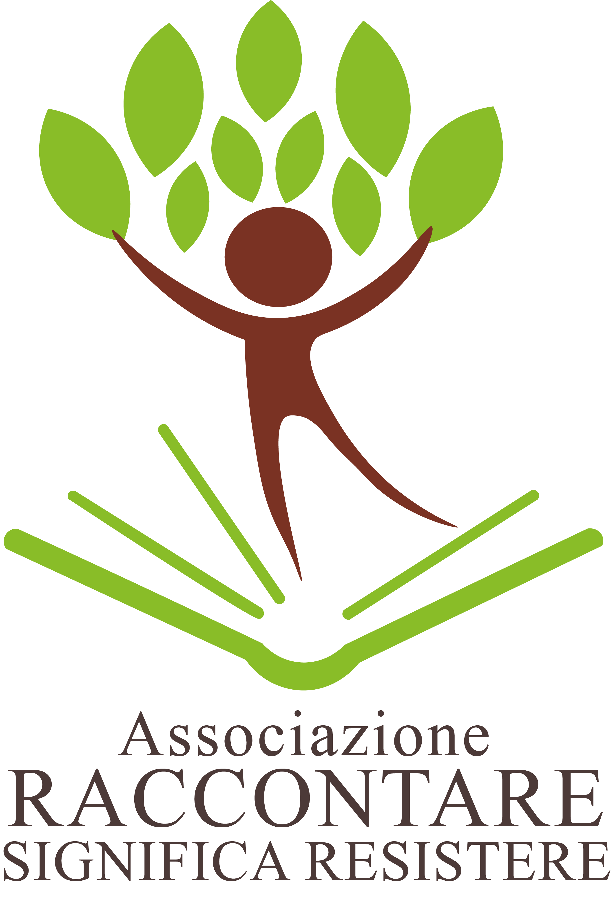

Museo della Civiltà Contadina
🌙 Modalità Notte
Home
Info
Foto-gallery
Saggezza popolare
La nostra cultura
Percorso urbano
Dizionario
Descrizione:...
Durata punti: 1-12 ~ 1.30 h
+
−
⟳
🔍
≡
👁
1
2
3.1
4
5
6
7
8
9
10
11
12
13
14
15
16
17
18
19
20
21
22
23
24
25
26
27
Dettagli
Descrizioni a cura

↑